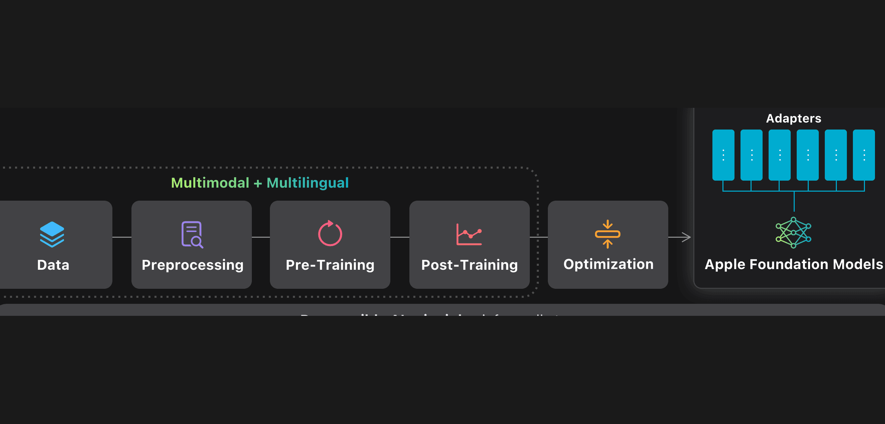
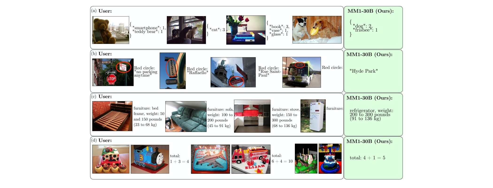
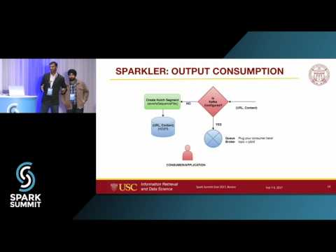
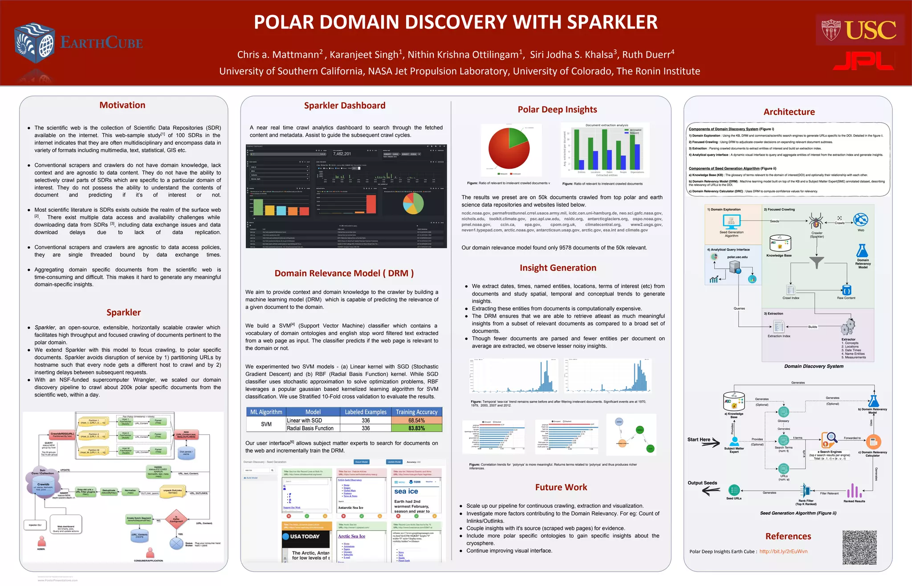
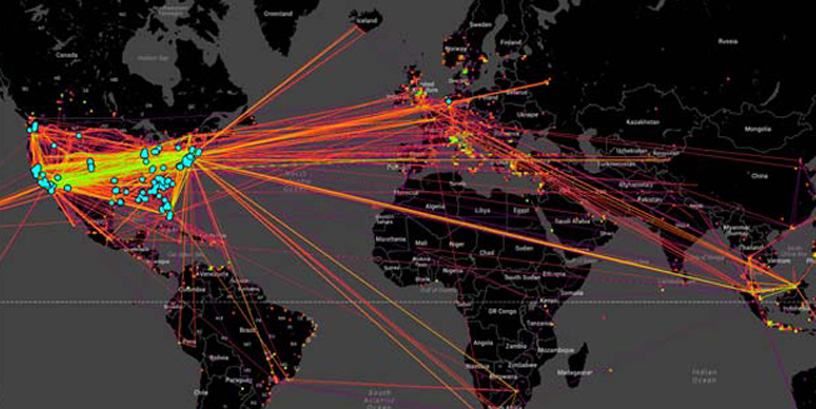

I am a Staff Machine Learning Engineer at Apple, where I focus on building large-scale machine learning systems for information extraction and curation. I am part of the core team behind Apple Intelligence, where I focus on pre-training data quality and curation for the foundation models that power AI features across Apple devices, as well as MM1, Apple's multimodal model family.
I have over a decade of experience in AI and ML, with a focus on information extraction and retrieval at web scale. Previously, I worked as a Machine Learning Researcher at NASA Jet Propulsion Laboratory as part of the DARPA Memex program, where I worked on crawling and search technologies for the deep and dark web. At JPL, I also contributed to the Mars Target Encyclopedia, an NLP system for extracting compositional knowledge from Mars science literature.
I am an elected member of the Apache Software Foundation, a committer and PMC member on Apache Nutch, and co-creator of Sparkler, a distributed web crawler on Apache Spark. I hold a Master's in Computer Science from USC Viterbi School of Engineering.
Highlights

|
[2026] Paper Beyond a Single Extractor: Re-thinking HTML-to-Text Extraction for LLM Pre-training accepted at EACL 2026 |
|  | [2025] Launched new versions of Apple's On-Device and Server Foundation Language Models supporting several new capabilities and languages |

|
[2024] Apple Intelligence launched at WWDC; contributed to pre-training data quality and curation for the foundation models. Press: CNBC, TechCrunch, The Verge, NYT |
|  | [2024] Our paper on MM1, Apple's multimodal model family, appeared at ECCV 2024. Featured in Wired, VentureBeat, Nasdaq |
|  | [2017] Presented Sparkler at Spark Summit East (video, slides); also spoke at ApacheCon North America and ApacheCon Big Data Europe |
| [2017] Featured on the Science and Supercomputers podcast — "When Data's Deep, Dark Places Need to be Illuminated" — discussing how we used the TACC Wrangler supercomputer to combat human trafficking through deep web analysis | |
|  | [2017] Presented Polar Deep Insights at the EarthCube All Hands Meeting — mining scientific data from polar repositories using Sparkler and NSF XSEDE supercomputing resources [NSF award] |

|
[2017] Elected as a member of the Apache Software Foundation [announcement] |
|  | [2016] Joined NASA JPL as part of the DARPA Memex program to build search technologies for the deep and dark web |
Publications
See Google Scholar for a complete list, or view the Global Author Citation Map.
|
Beyond a Single Extractor: Re-thinking HTML-to-Text Extraction for LLM Pretraining J. Li, J. P. Gardner, D. Kang, F. Shi, K. Singh, et al. EACL 2026 [paper] |
|
Apple Intelligence Foundation Language Models: Tech Report 2025 E. Li, A. B. L. Larsen, ...K. Singh... et al. Apple, 2025 [paper] [arxiv] |
|
MM1: Methods, Analysis & Insights from Multimodal LLM Pre-training B. McKinzie, Z. Gan, ...K. Singh... et al. ECCV 2024 [paper] [arxiv] [wired] [venturebeat] |
|
Apple Intelligence Foundation Language Models T. Gunter, Z. Wang, ...K. Singh... et al. Apple ML Research, 2024 [paper] [arxiv] [product] [wikipedia] |
|
Mars Target Encyclopedia: Rock and Soil Composition Extracted from the Literature K. Wagstaff, R. Francis, T. Gowda, Y. Lu, E. Riloff, K. Singh, N. Lanza. AAAI, 2018 [paper] [project] |
|
An Automated Approach for Information and Referral of Social Services Using Machine Learning M. Sharan, N. K. Ottilingam, C. A. Mattmann, K. Singh, et al. IEEE IRI, 2017 [paper] |
Open Source

A distributed web crawler built on Apache Spark that enables large-scale crawling with integrated NLP and ML capabilities
A highly extensible and scalable open-source web crawler built on Apache Hadoop. Used widely in production search and data-mining pipelines

A Distributed Release Audit Tool that automates license header checking and code compliance analysis across large codebases
Recognition & Engagement
- AINL 2025 — Reviewer for the Artificial Intelligence and Natural Language conference
- ARR October 2025 — Reviewer for ACL Rolling Review
- ESIP Lab 2024 — Reviewer for AI/ML-driven environmental research proposals
- Apache Software Foundation — Elected as a Member for sustained open-source contributions [announcement]
- Spark Summit East 2017 — Invited to present Sparkler at the main Apache Spark conference [slides]
- EarthCube All Hands 2017 — Invited for a talk on deep and scientific web search analytics [slides]
- ESIP Winter Meeting 2017 — Invited for a poster on mining insights from polar data repositories
- EarthCube Early Career Travel Grant 2017 — Selected for a grant to attend the EarthCube All Hands Meeting
- DARPA Memex Research Group — Part of the NASA JPL team, one of 17 groups funded nationally [project]
- ApacheCon North America 2016 — Invited for a talk on DRAT, a scalable approach to large-scale software license analysis [schedule]
- ApacheCon Big Data Europe 2016 — Invited for a talk on Sparkler and distributed crawling, Seville [schedule]
- USC Dean's Master's Fellowship — Merit-based fellowship awarded to the top 2% of incoming students
- DXC Technology 2012 — Top 10 national finalist for a technology white paper
- Microsoft Imagine Cup 2009 — Top 4 national finalist in India
- Dell Social Innovation Competition 2009 — Worldwide semi-finalist, UT Austin
- Indian Computing Olympiad — Top 3.3% among 7,200 pre-selected students